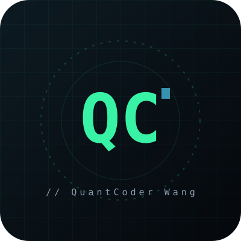

QuantCoder_Wang
全栈工程师 · 算法 / 数据 / 金融
6年证券分析、量化分析、需求分析、软件工程开发经验，横跨平台工程、算法与数据链路，具备金融量化研究实践。 擅长把模糊业务问题拆解为可度量指标，完成从数据、模型到服务化的闭环。 习惯写文档、做复盘，能独立推进跨团队项目。
工作经历
数据分析师/开发
2019 — 至今某集团 · 运营管理部
- 独⽴维护集团庞⼤ERP系统，管理数据仓库，针对原有系统功能缺失与数据孤岛痛点，设计并开发多个 Python数据桥接脚本，打通 ERP、CRM 及外部平台数据壁垒，实现异构数据⾃动化同步与清洗⼊库，并填补系统功能空⽩。
- 运⽤ Python (Django/Flask) + Web前端技术，独⽴全栈开发销售管理、档案管理、条线管理、内部认证培训考试等6个内部业务管理⼦系统，显著提升业务流转效率；利⽤ AI辅助编程技术，独⽴承担从需求分析、架构设计到上线运维的全⽣命周期⼯作。
- 主导公司微信⽣态（公众号/⼩程序）的前期架构规划。负责从账号申请、认证流程到需求分析的全链路落地⼯作，梳理业务逻辑并输出功能需求⽂档，有效推动业务线上化转型。
- 负责集团核⼼数据库管理与报表开发，构建⾃动化数据清洗流程，输出多维度业务分析报表，为管理层决策提供数据⽀撑。
证券分析师
2018 — 2019某科技公司 · 研究部
- 深⼊研究证券市场趋势，运⽤技术分析⽅法撰写专业投研⽂章，为股票交易提供策略⽀持。
- 负责微信公众号⾦融内容输出，将复杂的⾦融逻辑转化为可视化图⽂，提升⽤⼾粘性。
- 协助团队进⾏量化交易策略的逻辑梳理与历史数据回测，评估策略有效性。
证券分析师
2016 — 2018某技术有限公司 · 研发部
- 主笔公司对外核⼼栏⽬，独⽴完成证券市场深度分析报告，积累了扎实的⾦融逻辑与数据敏感度。
- 为交易团队提供实盘技术分析⽀持，结合量价模式优化交易决策。
代表项目
AtmaBook · 离线地图攻略应用
2026 — 至今开源 · Dart / Flutter / Android
- 一款以地图为主画布的 Flutter 离线旅行攻略应用。
- 图文标记游玩地点、自动聚类"必去"点生成游览片区与推荐路径。
- 带 GPS 的照片与视频铺成地理相册、一键打包为单文件攻略与他人分享或作为永久备份。
- 全量数据仅存于本机，不依赖任何服务器、不注册任何账号，你永远不需要担心数据丢失或软件下架，运营商关闭服务器
DeconstructedStocks · 股票自动分析平台
2026 — 至今开源 · Python / Qt / AI
- 依靠爬虫获取数据的股票自动分析平台框架，已构建基于爬虫的A股、美股指数即个股行情看板，数据本地缓存。
- 已构建依靠爬虫的新闻情报收集分析体系，借助自然语言提取技术及哈希化关键词聚类，形成一套简单的新闻可视化分析体系。